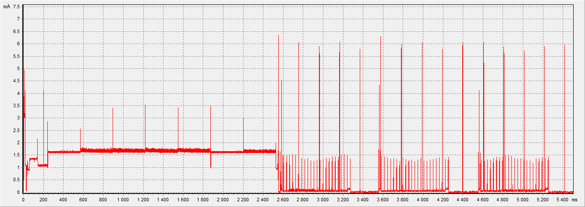
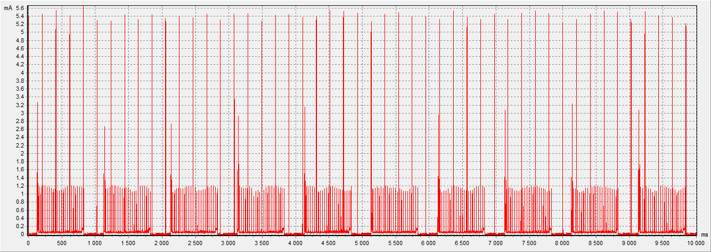
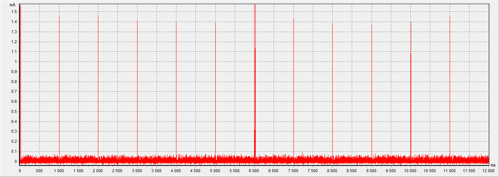
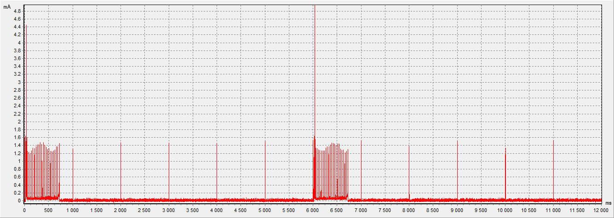
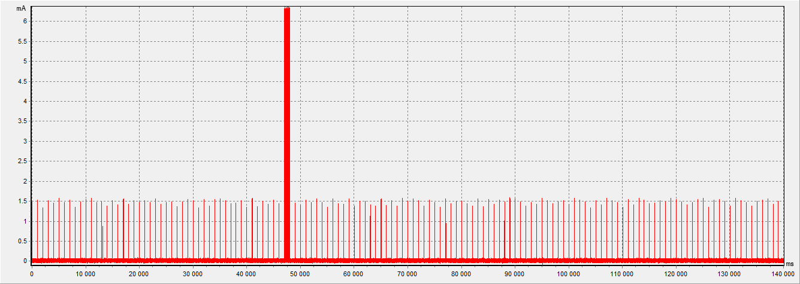

Power Consumption Xiaomi XMWSDJ04MMC (E-ink)
Потребление по старту питания:

Average consumption: 0.809 mA (window: 0.55 sec, power: 3.3V)
RF TX Power: +0 dbm
Потребление в режиме ожидания активации:

Average consumption: 0.113 mA (window: 10 sec, power: 3.3V)
RF TX Power: +0 dbm
Потребление в режиме ожидания смены показаний:

Average consumption: 3.2 uA (window: 12 sec, power: 3.3V)
Потребление при передаче рекламы и отображению новых показаний:

Average consumption: 13.4 uA (window: 12 sec, power: 3.3V)
RF TX Power: +0 dbm
Потребление при передаче текущих показаний пачкой реклам в gateway:

Average consumption: 4.7 uA (window: 140 sec, power: 3.3V)
RF TX Power: +0 dbm